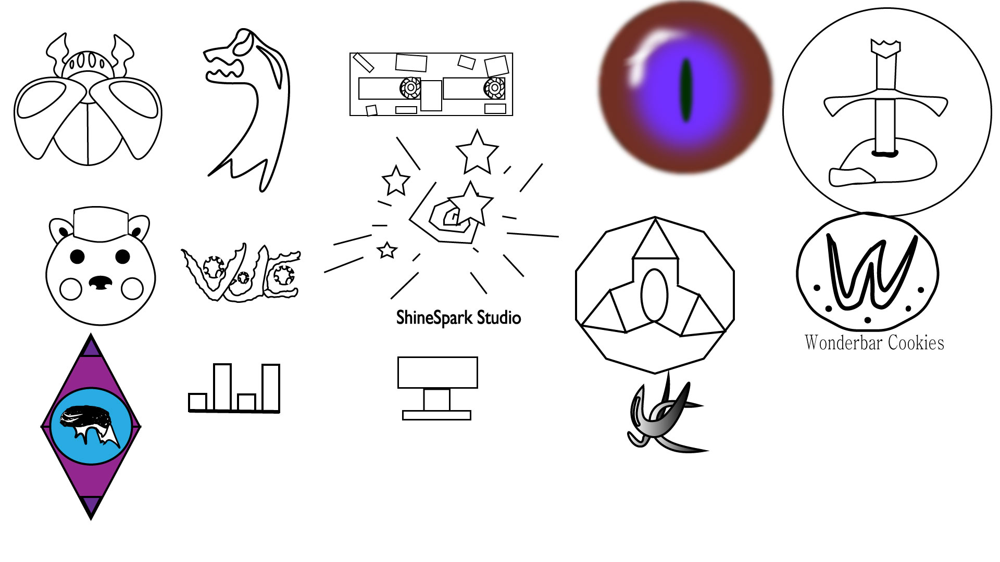

Digital Art Works
Websites
A Photoshop Introduction Piece
Finalized: Sep 8/2021

This was my first attempt at Photoshopping my face and other objects into a picture. There is a bat in the statues hand, a hot dog and baseball at the base of the statue. Along with my self at the left side of the picture. Finally a painting of Babe Ruth in the portrait behind the statue. This piece shows I know how to worked photoshop and show I can learn new things so I can help make my clien more money. My audience for this piece was no one in particular just for myself to test and see if I could work photoship well.
A Fake Advert
Finalized: Sep 22/2021

This one I had to make a fake, comedic, advert. This one I added a dolphin jumping out of the soup, a fish swimming in the soup, a octopus tentacle coming out of the soup, and finally I added a shark fin. I had to make it so these objects looked apart of the picture. Than making up a funny text, which you can see in the picture. The value would increase for a clien because I can work on photoshop and improve my skills in it if needed. My audience for this one was to have it so if I was to apply to work at a advert company, I can mix comedy into my work to gain a bigger audience.
Eyes
Finalized: Oct 6/2021
This is another Photoshop project I had to do. I had to color over my eyes very well that it had to look like a painted version of my eyes. This one was really difficult and took a lot of time, but in the end I just couldn't figure out how to blend all the colors well. For a client this would be valuable because it shows I can pain in photoshop to a exstent, with enough time I could really make good art, instead of this one. My main audience would have to be the art community to show I could potentially draw my face in photoshop.
Logos
Finalized: Oct 20/2021
Instead of using photoshop for this project, I had to use Adobe Illustrator to create my logos. I had to make ten logos of my choice, it was a free create project. You can see I created many different logos, some based off video games, others that I came up with randomly, and a few references to shows. This can help value my cliet because it shows I can work with different types of drawings/styles so I can make big or small. My main audience for this was for companies who are looking for new logos.
Crest
Finalized: Nov 3/2021

This project I had to make was a family crest. I had to make a crest that represent my family and I. I used animals to represent some attributes/characteristics I see in myself, with their (close enough looking) Environment behind them. In the center is a heart with a small reference to my family's actual crest. With a heart at the core stating that my family means a lot. This could value a client because it shows I can make busy art pieces. My auidence was my family as a crest to them and how I view my family.
Character
Finalized: Nov 17/2021
This is my most recent project that I had to make. This time I had to make my own character from all the skills and principles of design I was taught in class to make a character of my own creation. In my final decision I made a mushroom knight with a soldier like appearance but with a warm heart. I spent many hours on this project because I liked this one the most. This can value my client because it shows I can also make characters and make them look like they have life to them. My audience was for any company looking for a orginal character with some personality to them.
Website 1
Finalized: Sep 28/2021

This is the first website I had to make. Its very simple and doesn't contain a lot, I just had to position things and size them accordingly. How this would be valuable to a client, would be because it shows if needed I can work on coding for websites. My intended audience would be companies looking for people who know how to code websites.
Website 2
Finalized: Oct 5/2021

This is the second demo website I had to make . It was a bit more difficult than the last one but fairly simple. This took a bit more time but not a lot of time. This is valuable to a client because it shows I can improve my skills in coding thus I can work on my difficult tasks if needed. My attended audience again would be website coding companies like the prior work.
Website 3
Finalized: Nov 2/2021
For this one I had to make a more complex website, it was based off a website outline I had seen before. I had to copy it exactly, even though mine looks almost like the one I saw but not all the way. I just didn't understand how to position things correctly so I had to use alternative methods to get it looking like it. This is valuable to a client because it shows I can work with a draft and make it look pretty profesional looking. My intented audience for this one was coding companies for websites and also people who are looking for layouts.
Website 4
Finalized: Nov 16/2021

This was a really complicated website I had to make. I had to, again, copy a outline website our teacher gave us. This was a really difficult one that took, in my opinion, the longest time I have spent on making a website. Once again I had to use my own methods to get it to look exactly like the one he wanted us to copy. This is valuable to a client because it shows even though I may not understand coding a website completely I can work with these conditions and find a way to get what I want it to look like. My audience for this project would be companies who are looking for someone who is capable of coding a website with very little experience and is willing to try it.